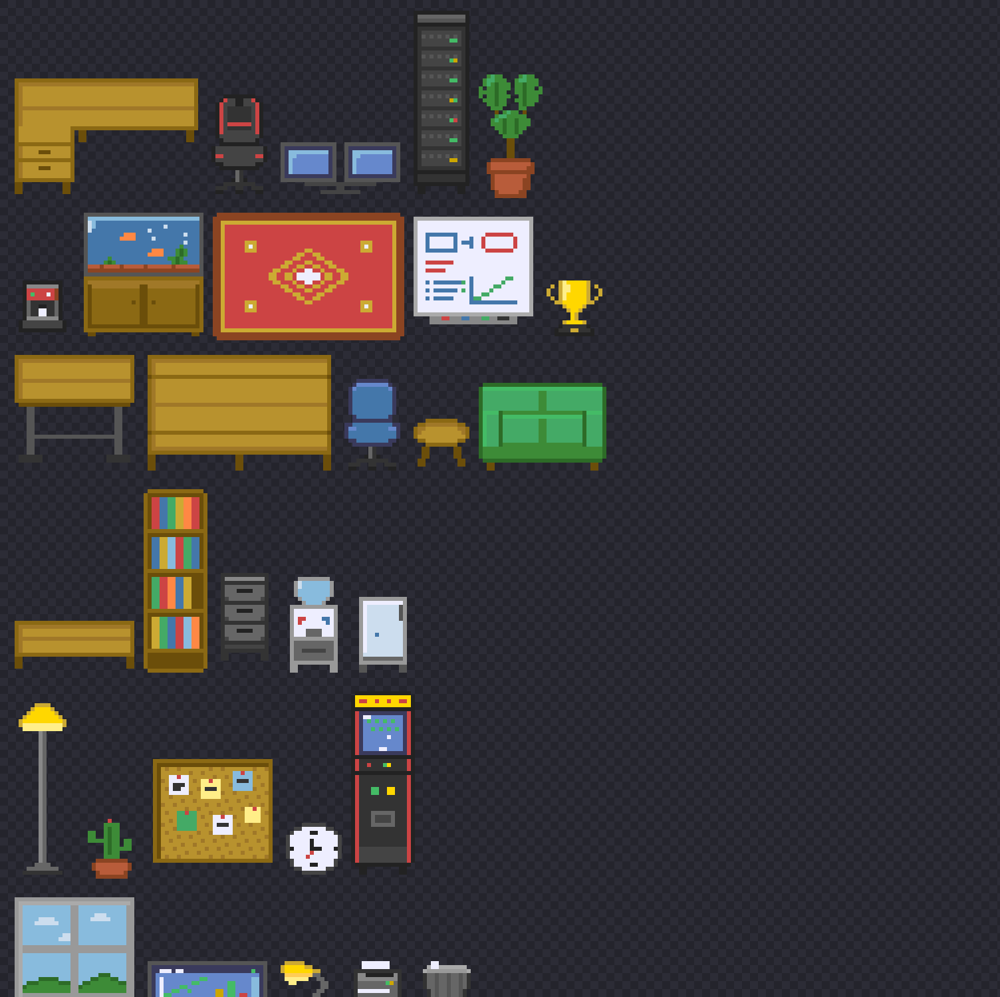

My side project is a desktop app where Claude Code agents show up as characters in a pixel-art office. It was open source, MIT — and it shipped with sprites from a private asset pack I had no right to redistribute. The licence said one thing and the art said another.
I can't draw. What I could do was notice that a language model doesn't have to draw either. It has to write a grid of characters.
Every sprite is a character grid plus a legend mapping those characters to colours from a shared palette. Here is a real one, an office chair, 16×32:
const CHAIR_OFFICE = fromAscii(
[
'.dBBBBBBBBBBBBd.',
'..ddBBBBBBBBdd..',
'...dddddddddd...',
'.......gk.......',
'.......gk.......',
'......ogko......',
'....kkkkkkkk....',
'..kkk..kk..kkk..',
'..oo...oo...oo..',
],
{ d: SCREEN_SHADOW, B: BLUE, g: STEEL, k: IRON_DARK, o: INK },
);
fromAscii compiles that to the hex grid the renderer already used, so nothing downstream had to change.
This suits the model unusually well. It can hold a 16×32 grid, it can count columns, and — the part I didn't expect — it writes down what it is trying to do before it does it. The comment above each sprite in the source is the model's own, and reads like: "the glass is ICE with a diagonal highlight so it reads as a pane and not as fog."
For bigger pieces, typing the rows out stops scaling. Those are painted instead: allocate a blank grid, then write code that fills it — loops for the carcass edges, a helper for each glass pane. Same characters, same legend, described as shapes rather than typed as text.
What made ten batches cohere wasn't a better prompt. It was writing four rules into the source, where they stay:
The tenth batch still matches the first.
Text output alone gets you plausible arrays that render as mush. What made it work was giving the model eyes: one script renders every sprite into a single contact sheet — 6× scale, dark checkerboard, 8px gaps — and the model opens the PNG and looks at it.

That's the loop. Write the grids, render the sheet, look, fix, render again. Almost every real improvement came from the looking step, not the writing.
Rotations. Mirroring is the free move, and it is what the app still does for the characters — the left-facing walk cycle is the right-facing one flipped, and nobody can tell.
Furniture in 3/4 perspective doesn't survive it. Flip an L-shaped desk and you don't get the same desk seen from the other side, you get a different piece of furniture:
Every non-symmetric piece had to be drawn again as a real quarter turn.
The second-order problem was worse. A quarter turn can swap a footprint from 2×1 to 1×2, so rotating in the editor is not a sprite swap — the placement rules have to re-validate, pivot around the item's centre, fall back to its original corner, and refuse the rotation if neither fits.
Day one was 38 sprites and 7 floor patterns — enough to cut the private pack loose. It is now 122 catalogue entries across nine batches: furniture, walls, floors, an outdoor campus, and a few pieces you can only unlock by using the app. All MIT, all in the repo as source you can read and re-run.
One caveat, since the history is public anyway: the characters aren't from this pipeline. They came from the project I forked, written back in February — also by a Claude agent, but months before any of this existed. What I am describing here is everything except the people.
{kind=link}